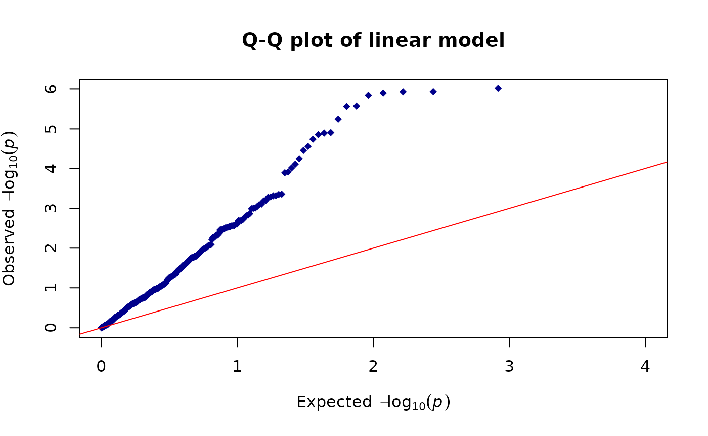
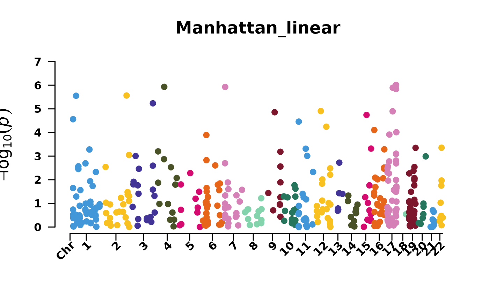
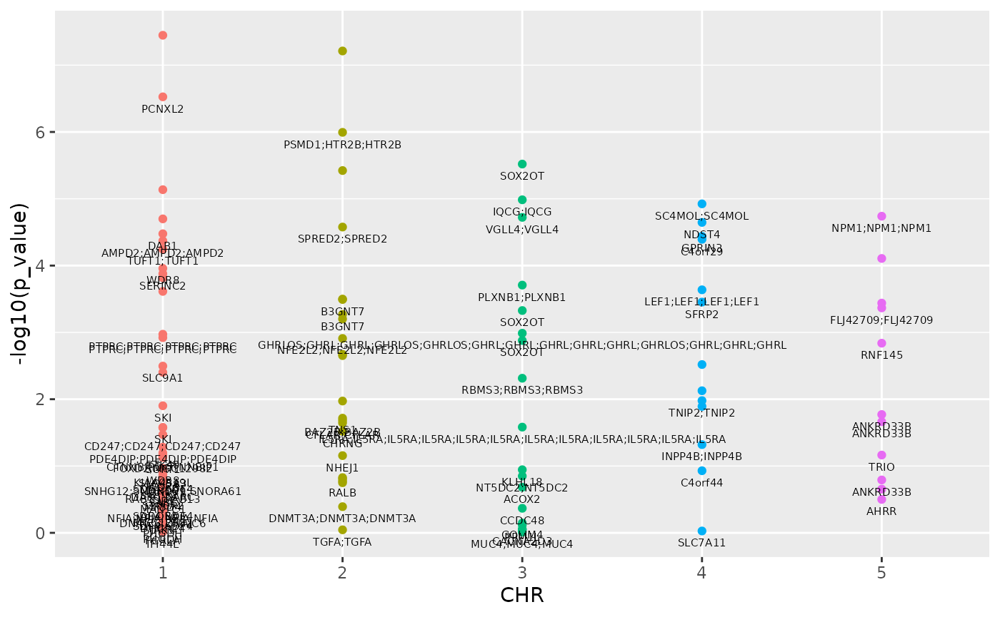

Assoc-test.RmdThis vignette shows how to use MethParquet to
conduct association tests on normalized methylation data, from simple
linear to mixed models incorporating kinship matrix as random effect to
account for genetic similarity among samples, inspired by GENESIS.
We also provide a short example for a more flexible association analysis
using flex_ewas(), which accepts a regression model created
by users as input to test each CpG site one after another.
*Note that all results were based on toy datasets and hence are not meant for significant biological interpretation.
Load required packages
library(MethParquet)
#> Warning: replacing previous import 'arrow::string' by 'rlang::string' when
#> loading 'MethParquet'
library(arrow)
library(tidyverse)
library(limma)
library(GENESIS)
library(knitr)MethParquet
takes a MethList object created by
create_methlist(). This object must contain the connection
to the Parquet database for the processed methylation data (in beta or M
values), along with sample and CpG annotation in the
data.frame format. Below is the example code to create the
parquet database using write_parquet_meth, leveraging the
package arrow,
followed by generation of MethList. Note that MethData is only loaded to
demonstrate the data structure. During creation of the Parquet database,
this methylation matrix is not loaded into local memory.
# Load example data
data(phenoData)
data(chrAnnotation)
MethData <- read.csv(system.file("extdata/MethData.csv", package="MethParquet"))
kable(head(MethData,c(3L,5L)))| CpG | GSM1505103 | GSM1505113 | GSM1505099 | GSM1505117 |
|---|---|---|---|---|
| cg00567854 | 0.655 | 0.639 | 0.745 | 0.619 |
| cg00714874 | 0.683 | 0.715 | 0.616 | 0.604 |
| cg00826902 | NA | 0.930 | NA | 0.958 |
Create Parquet database in path where the methylation
data is partitioned by chromosome.
wdir <- getwd()
methpath <- paste0(wdir,'/inst/extdata/MethData.csv')
path <- paste0(wdir,'/Parquet_Directory')
write_parquet_meth(data_path=methpath,format='csv',group_by='CHR',parquet_path = path)While creating MethList, users can choose to include only relevant
columns from CpG and sample annotation to optimize data. Here only CpG
names and position in chromosome (Name and
MAPINFO), choromosome number CHR as well as
gene names UCSC_RefGene_Name are included in the
mlist.
names(chrAnnotation)[c(2,12:13,16)]
#> [1] "Name" "CHR" "MAPINFO"
#> [4] "UCSC_RefGene_Name"
mlist <- create_methlist(db_path = path,cpg_col_db='CpG',subject_annot = phenoData,
subject_col_keep='all',cpgAnnot_col_keep=c(2,12:13,16),cpg_annot = chrAnnotation,
subject_id='sample_id',cpg_col_annot='Name', gene_col_name = 'UCSC_RefGene_Name')
names(mlist)
#> [1] "db" "subject_annot" "cpg_annot"MethParquet provides various models and ways to perform association analysis on methylation data. In this vignette we will show both the built-in models, as well as the flexible implementation using external ones. To streamline the pipeline, output of these analysis can be readily visualized by constructing QQ or Manhattan plots.
lm_ewas_outcome() and rlm_ewas_outcome()
regresses methylation on phenotypic trait and covariates, while
returning the estimate effect of the trait and test statistics. We
further accelerate simple linear regression by solving it through matrix
and algebra operations, in a way that the CpG sites are tested in chunks
and only relevant parameters are computed. That said, for same CpG list,
rlm_ewas_outcome() would take longer to finish as it
performs a “site by site” test. Here we illustrate an example of simple
linear regression, with the other assuming the same usage.
ewas_lm <- lm_ewas_outcome(db_obj=mlist,trait='age',covariates_string = c('bmi','sex'),out_position=c('CHR','MAPINFO'),NAs_to_zero = TRUE)
kable(head(ewas_lm))| CpG | estimate | se | t_stat | t_stat_df | p_value | fdr_bh | CHR | MAPINFO |
|---|---|---|---|---|---|---|---|---|
| cg00050692 | -0.0021709 | 0.0007096 | -3.0590739 | 96 | 0.0028777 | 0.0248571 | 2 | 25524877 |
| cg00094412 | 0.0002246 | 0.0006355 | 0.3534218 | 96 | 0.7245472 | 0.8312166 | 6 | 29592854 |
| cg00108715 | -0.0004203 | 0.0005670 | -0.7412196 | 96 | 0.4603696 | 0.6295783 | 3 | 52565015 |
| cg00138407 | 0.0001527 | 0.0010465 | 0.1459213 | 96 | 0.8842895 | 0.9340449 | 3 | 47386505 |
| cg00184953 | 0.0021138 | 0.0019015 | 1.1116253 | 96 | 0.2690755 | 0.4445127 | 6 | 31146222 |
| cg00222799 | -0.0001143 | 0.0005759 | -0.1984934 | 96 | 0.8430788 | 0.9144712 | 21 | 43655464 |
As aforementioned, by specifying the CpG position in chromosome
(MAPINFO), the output can be easily channeld to construct
visualization plots.
library(qqman)
library(CMplot)
qq(ewas_lm$p_value,main = "Q-Q plot of linear model", xlim = c(0, 4), ylim = c(0, 6), pch = 18, col = "blue4")
CMplot(ewas_lm[,c(1,8,9,6)],type='p',plot.type='m',dpi=300,file.output = FALSE,
verbose=TRUE,width=400,height=172,chr.labels.angle=45,main = 'Manhattan_linear')
#> Rectangular Manhattan plotting p_value.
As inspired by GENESIS, there are two steps involved when fitting a mixed model to test the association:
NullModel() fits the null model without the CpG
variable, where phenotypic trait is treated as the outcome. In
particular, random effect is specified by covariance matrices
(cov.mat).
ewas_meth_exposure() then runs the association
testing by adding each CpG to the null model and returns a data frame
with coefficient estimate and test statistics.
# Create a random kinship matrix
library(Matrix)
library(psych)
kinship <- Matrix(runif(10000,min=-1,max=1), 100)
kinship <- forceSymmetric(kinship)
diag(kinship) <- 1-0.01*runif(100,min=-1,max=1)
row.names(kinship) <- phenoData$sample_id
colnames(kinship) <- row.names(kinship)
# Make the matrix positive definite
kinship <- cor.smooth(as.matrix(kinship))
#> Warning in cor.smooth(as.matrix(kinship)): Matrix was not positive definite,
#> smoothing was done
kable(kinship[1:4,1:4])| GSM1505103 | GSM1505113 | GSM1505099 | GSM1505117 | |
|---|---|---|---|---|
| GSM1505103 | 1.0000000 | 0.0979275 | -0.0949970 | 0.1499061 |
| GSM1505113 | 0.0979275 | 1.0000000 | 0.2204344 | -0.0939170 |
| GSM1505099 | -0.0949970 | 0.2204344 | 1.0000000 | -0.0413349 |
| GSM1505117 | 0.1499061 | -0.0939170 | -0.0413349 | 1.0000000 |
Now fit the null model with age andsex` as fixed and
kinship matrix as random effect.
m.null=NullModel(db_obj=mlist,trait='bmi',covariates_string = c('age','sex'),cov.mat = kinship,method='mixed',family='gaussian')
#> Computing Variance Component Estimates...
#> Sigma^2_A log-lik RSS
#> [1] 71.5596274 71.5596274 -378.5245838 0.9811488
#> [1] 27.249861 81.587682 -374.919423 1.058672
#> [1] 16.540708 93.491124 -374.620423 1.014747
#> [1] 16.998809 94.672170 -374.620314 1.000216
#> [1] 16.99712 94.69694 -374.62031 1.00000
names(m.null)
#> [1] "NullModel" "Y" "X"
m.null$NullModel$model$formula
#> [1] "bmi ~ age + sex + (1|A)"Run association tests with fitted null model on chromosome 1-5.
chr <- as.character(seq(from=1,to=5))
mixed=ewas_meth_exposure(db_obj=mlist,m.null,select_sites = FALSE,select_chr = chr, out_position=c('CHR','MAPINFO','Gene'),NAs_to_zero = TRUE)
kable(head(mixed))| CpG | Estimate | Score | Score.Stat | p_value | fdr_bh | CHR | MAPINFO | Gene |
|---|---|---|---|---|---|---|---|---|
| cg00050692 | -7.793037 | -0.0886922 | -0.8313733 | 0.4057628 | 0.4780769 | 2 | 25524877 | DNMT3A;DNMT3A;DNMT3A |
| cg00108715 | 16.977956 | 0.1273396 | 1.4703625 | 0.1414636 | 0.2215022 | 3 | 52565015 | NT5DC2;NT5DC2 |
| cg00138407 | -9.687622 | -0.2583517 | -1.5820282 | 0.1136431 | 0.1904723 | 3 | 47386505 | KLHL18 |
| cg00567854 | -20.477495 | -0.0892299 | -1.3517416 | 0.1764580 | 0.2458326 | 1 | 203273693 | BTG2 |
| cg00714874 | -2.182466 | -0.0117571 | -0.1601856 | 0.8727349 | 0.9185631 | 1 | 161679461 | FCRLA |
| cg00741986 | -44.457157 | -0.1473435 | -2.5593894 | 0.0104856 | 0.0258522 | 4 | 2748332 | TNIP2;TNIP2 |
Users have great flexibility in customizing visualization. For instance, with gene name listed in the output, one can plot the CpG sites with gene as label using ggplot2. The CpGs on the top would be those with lowest p-values.
ggplot(mixed, aes(x=CHR, y=-log10(p_value))) +
geom_point(aes(color=as.factor(CHR))) +
geom_text(label=mixed$Gene,size=2,vjust=2) + theme(legend.position="none")
flex_ewas tests the CpG-phenotype association one by one
using the provided external model. For example, the following robust
linear regression takes methylation as exposure to compute its
association with a quantitative trait height.
rlm_function <- function(x) {
mod <- base::suppressWarnings(MASS::rlm(as.formula(paste('age', "~x+", 'age')), data = phenoData))
return(summary(mod)$coefficients[2,])
}
flex_rlm <- flex_ewas(mlist,rlm_function,out_position = c('MAPINFO','Gene'))
kable(head(flex_rlm))| CpG | Value | Std. Error | t value | CHR | MAPINFO | Gene |
|---|---|---|---|---|---|---|
| cg00050692 | -42.581828 | 14.62981 | -2.9106215 | 2 | 25524877 | DNMT3A;DNMT3A;DNMT3A |
| cg00094412 | 9.641751 | 20.83006 | 0.4628767 | 6 | 29592854 | GABBR1;GABBR1;GABBR1 |
| cg00108715 | -12.901337 | 21.28209 | -0.6062063 | 3 | 52565015 | NT5DC2;NT5DC2 |
| cg00138407 | 13.860760 | 36.19346 | 0.3829631 | 3 | 47386505 | KLHL18 |
| cg00184953 | -29.013044 | 40.09269 | -0.7236491 | 6 | 31146222 | PSORS1C3 |
| cg00222799 | -2.777217 | 21.06250 | -0.1318560 | 21 | 43655464 | ABCG1;ABCG1;ABCG1;ABCG1;ABCG1;ABCG1 |
unlink(path,recursive=TRUE)